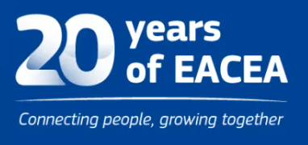

01
European skills sector & strategies
Leading role of the Lab in the European skills sector, including relevant strategies. Two projects from the lab — DRIVES and ECSA — were among 20 selected from the last 20 years of EACEA.
Main focus area
Leading role in the European skills ecosystem, close collaboration within Union of Skills networks including Pact for Skills, and organization of relevant events.
Network & impact
Strategic collaboration connects relevant strategies, European skills networks, and events on topics from the lab pillars.

Leading role of the Lab in the European skills sector, including relevant strategies. Two projects from the lab — DRIVES and ECSA — were among 20 selected from the last 20 years of EACEA.
Close collaboration within Union of Skills networks, including Pact for Skills.
Organization of relevant events on European, national and regional level on various topics from the Lab pillars.
The project portfolio spans running and finalized projects and more than €35 million in overall project budget.